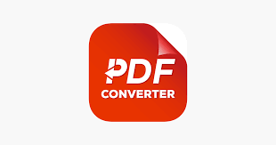

Hello, I'm Nayan Joshi
A motivated software engineering student with a strong foundation in Data Structures and Algorithms, combined with hands-on developing real-world web applications. I focus on writing clean, efficient, and scalable code while following best practices in software design. I enjoy solving complex problems, optimizing performance, and building reliable solutions that are easy to maintain and extend.
Technical Skills
Projects
Below are some of my key projects that demonstrate my skills in UI development, practical tool building, improving user experience, and writing maintainable code.
 YouTube Clone
YouTube Clone
A responsive YouTube-style frontend project that replicates real platform layouts, video feed structure, navigation, and smooth UI interactions.
Key Features / Operations
- Responsive layout for mobile and desktop screens
- Sidebar navigation and video feed UI structure
- Modern hover effects, transitions, and smooth UI behavior
- Clean component-like design for future scalability
What I Learned
- Building layouts like real-world web platforms
- Responsive UI design using Flexbox and Grid
- Creating clean UI sections with proper spacing
 AI Chatbot Web App
AI Chatbot Web App
A chatbot-based web application with a conversational UI flow that allows users to chat in a clean, modern interface with responsive design.
Key Features / Operations
- User and bot message bubble UI
- Input box with send button functionality
- Auto scroll on new incoming messages
- Clean conversation layout for better readability
What I Learned
- Handling UI conversation flow with JavaScript
- Improving UI structure and code readability
- Creating smooth user experiences like real chat apps
 Notepad App
Notepad App
A lightweight note-taking application where users can create and manage notes with a clean editor UI. Designed with simplicity and productivity in mind.
Key Features / Operations
- Create, update and manage notes easily
- Simple and clean editor interface
- Fast UI performance with minimal design
- Responsive layout for all devices
What I Learned
- Handling user input and storing note data
- Writing modular and maintainable JavaScript
- Building productivity-based UI workflow
 QR Code Generator
QR Code Generator
A QR code generator tool where users can enter a text or URL and instantly generate a QR code. Built with a simple workflow and clean interface.
Key Features / Operations
- Generate QR codes for text and URL inputs
- Clean input design with validation
- Fast output rendering and smooth animations
- Quick regenerate workflow
What I Learned
- Real-time UI update using JavaScript
- Input validation and user-friendly error flow
- Building simple tools with clean UX
 Word to PDF Converter
A file conversion web tool that allows users to upload a document and convert it into PDF format. Built for smooth workflow and clear UI experience.
Key Features / Operations
- Document upload and file selection interface
- Convert document into PDF output format
- Simple conversion flow for easy usage
- Download-ready result workflow
What I Learned
- File handling concept in frontend applications
- Step-by-step workflow structuring
- Creating UI for real-world utility tools
 Book Store Website
Book Store Website
A book store frontend project designed to showcase product listing pages and clean UI layout. Built with a simple e-commerce styling and responsive user interface.
Key Features / Operations
- Book listing UI with clean card design
- Modern UI layout with structured spacing
- Responsive design across all devices
- Reusable layout patterns for scalability
What I Learned
- Creating e-commerce UI layouts with consistency
- Improving alignment, spacing, and design flow
- Better project structuring for portfolio use
Education
Senior Secondary (12th) – PCM
RBSE(AJMER) Board
Completed Senior Secondary education with Physics, Chemistry, and Mathematics.
Achieved strong academic performance with a clear focus on analytical thinking and problem-solving.
Marks:
Physics – 92
Mathematics – 83
Chemistry – 78
Bachelor of Computer Science (BSc-CS)
Mohanlal Sukhadia University – Udaipur
Focused on software development, algorithms, and web technologies. Built several major projects, including a bank account opening system and a gym activity website with a complete login system, UI design, and full project completion with achievement certificates.
Master of Computer Applications (MCA)
Bhagwan Mahavir University – Surat
Focused on strengthening logical thinking, software development, algorithms, and modern web technologies. Developed multiple large-scale projects such as a Payment Gateway system, e-commerce platform, and music streaming application.
Why Choose Me
Strong DSA & Problem-Solving Foundation
Solved 1000+ algorithmic problems across LeetCode (650+) and GeeksforGeeks, covering arrays, strings, linked lists, stacks, queues, trees, graphs, recursion, dynamic programming, greedy techniques, sliding window, and bit manipulation.
Competitive Programming Mindset
Regular practice has strengthened my ability to break down complex problems, identify optimal approaches, and write efficient solutions under time and space constraints.
Clean, Optimized & Readable Code
I focus on writing clean, modular, and maintainable code with proper naming, structured logic, and performance-aware optimizations that scale well.
Consistent & Disciplined Learner
Coding consistently for hundreds of days, I actively improve through daily problem-solving, hands-on projects, and continuous learning of modern development practices.
Problem-First Engineering Approach
I prioritize understanding the problem deeply before coding, allowing me to design efficient solutions rather than relying on trial-and-error implementations.
Industry-Ready Skillset
Along with DSA, I am building strong full-stack development skills, enabling me to translate logical thinking into real-world applications with clean UI and reliable backend logic.
Achievements & Certifications
- Solved 1000+ Data Structures & Algorithms problems across LeetCode (650+) and GeeksforGeeks, covering arrays, strings, linked lists, trees, graphs, recursion, dynamic programming, greedy techniques, and sliding window problems.
- Achieved a 3-star rating on LeetCode, demonstrating consistency, strong problem-solving skills, and competitive programming discipline.
- Successfully completed a 180-day DSA consistency challenge, maintaining daily problem-solving and continuous improvement.
- Completed Deloitte Australia Data Analytics Virtual Internship with 95% performance, gaining practical exposure to data analysis, business insights, and real-world problem interpretation.
- Earned a Python programming certification, strengthening fundamentals in logic building, data handling, and scripting concepts.
- Designed and developed multiple academic and personal projects, including full-stack web applications and utility tools.
- Actively building expertise in full-stack development, translating algorithmic thinking into scalable frontend and backend solutions.
- Known for a problem-first engineering mindset, focusing on clean architecture, optimized logic, and maintainable code.
About Me
Who Am I?
Hey! I’m Nayan Joshi — a passionate full-stack developer (in progress) and competitive programmer with a strong foundation in C++ and Data Structures & Algorithms. I have been coding consistently for 400+ days, strengthening problem-solving skills while learning modern full-stack development.
On LeetCode, I have solved 650+ problems, covering arrays, strings, recursion, linked lists, stacks, queues, trees, graphs, dynamic programming, and greedy algorithms. This journey has helped me develop clean logic, optimized solutions, and strong analytical thinking.
Alongside DSA, I am learning full-stack development and working with:
- Frontend: HTML, CSS, JavaScript, React
- Backend: Node.js, Express.js, MongoDB
- Tools: Git, GitHub, VS Code
I focus on writing clean, efficient, and readable code and enjoy turning ideas into working applications. I communicate fluently in English, learn fast, and enjoy explaining concepts—especially DSA and programming fundamentals.
Goal: To grow as a software engineer / full-stack developer, combining strong problem-solving skills with real-world development experience.
Contact & Profiles
Email: nayanjoshi209@gmail.com
Phone: +91 8239572981
Location: Surat, Gujarat, India